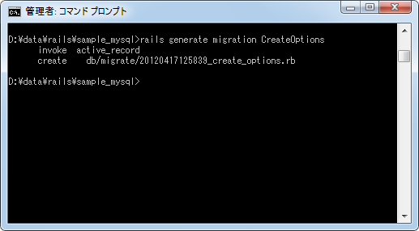
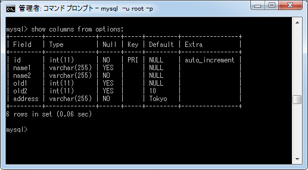
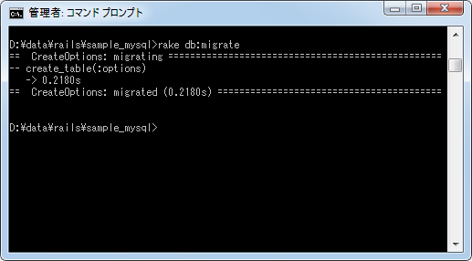
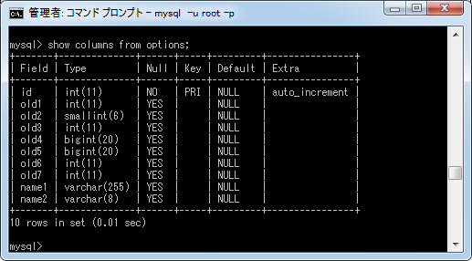
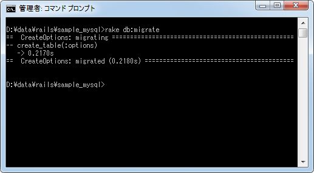
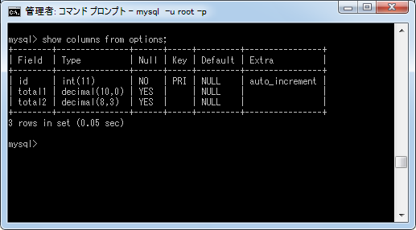

NOT NULLなどの制約の設定
テーブル作成時やカラムを追加する場合などに、カラムに対してNOT NULLやDEFAULTなどの制約を指定することができます。ここではカラムに対する制約の指定方法について解説します。
1.NULLの許可とデフォルト値の設定
2.limitの設定
3.precisionとscaleの設定
NULLの許可とデフォルト値の設定
まず最初にNULLの許可(NOT NULL制約)とデフォルト値の設定(DEFAULT制約)の設定です。
NULLの許可はカラムにNULLを格納する許可を与えるかどうかを設定します。デフォルトではNULLが許可されています。NULLを許可しない場合には「:null => false」をオプションに指定します。
デフォルト値の設定は、レコードが追加された時、カラムに値が設定されなかった場合にデフォルトで格納される値を設定します。デフォルト値の設定をする場合は「:default => 値」をオプションに指定します。
使い方は次の通りです。
create_table :titles do |t|
t.string :name, :null => false
t.integer :old, :default => 10
t.string :address, :null => false, :default => 'Tokyo'
end
テーブルを新規作成する場合を例に記載しました。「name」カラムはNULLを非許可にしています。「old」カラムにはデフォルト値として10を設定しています。「address」カラムにはNULLを非許可にした上でデフォルト値として'Tokyo'を設定しています。
では実際に実行してみます。今回はテスト用に新しいテーブルを作成します。マイグレーションスクリプトを次のように作成しました。
rails generate migration CreateOptions

作成されたマイグレーションスクリプト「db/migrate/20120417125839_create_options.rb」をテキストエディタで開き、次のように書き換えます。
class CreateOptions < ActiveRecord::Migration
def change
create_table :options do |t|
t.string :name1
t.string :name2, :null => false
t.integer :old1
t.integer :old2, :default => 10
t.string :address, :null => false, :default => 'Tokyo'
end
end
end
マイグレーションスクリプトを実行します。
rake db:migrate
テーブルが作成されました。ではMySQLに接続してテーブルに作成されているカラムを確認します。

NOT NULL制約、そしてDEFAULT制約が設定されていることが確認できます。
※ 確認が終わりましたら「rake db:rollback」でロールバックしていったんテーブルを削除してあります。
limitの設定
次はlimitの設定です。こちらは制約ではなくデータ型の最大幅を指定するために使います。対象となるデータ型は文字列タイプはstring型とtext型の2つ、数値タイプはinteger型とbinary型の2つです。
Railsではinteger型を指定した場合、MySQLを利用していた場合はint(11)型が使用されます。「:limit => num」をオプションに指定することで表示幅を変更できます。MySQLを使用している場合は、表示幅に合わせてint型やsmallint型、bigint型などが使われます。
同じくRailsでstring型を指定した場合、MySQLを利用していた場合はvarchar(255)型が使用されます。「:limit => num」をオプションに指定することでvarchar(num)が使用されます。
使い方は次の通りです。
create_table :titles do |t|
t.integer :old, :limit => 6
t.string :name, :limit => 8
end
では実際に実行してみます。今回は先程作成したマイグレーションスクリプトを次のように書き換えます(先程実行したマイグレーションはロールバック済みです)。次のように作成しました。
class CreateOptions < ActiveRecord::Migration
def change
create_table :options do |t|
t.integer :old1
t.integer :old2, :limit => 2
t.integer :old3, :limit => 4
t.integer :old4, :limit => 6
t.integer :old5, :limit => 8
t.integer :old6, :limit => 10
t.integer :old7, :limit => 12
t.string :name1
t.string :name2, :limit => 8
end
end
end
マイグレーションスクリプトを実行します。
rake db:migrate

テーブルが作成されました。ではMySQLに接続してテーブルに作成されているカラムを確認します。

integer型については、指定した表示幅に応じて実際に使用されるMySQLのデータ型がint型やsmallint型などに自動的に変更されていることが分かります。またstring型についてはvarchar(8)型のように指定した数値が設定されています。
※ 確認が終わりましたら「rake db:rollback」でロールバックしていったんテーブルを削除してあります。
precisionとscaleの設定
最後はprecisionとscaleの設定です。こちらは精度を指定するために使います。対象となるデータ型は文字列タイプはdecimal型です。
Railsではdecimal型を指定した場合、MySQLを利用していた場合はdecimal(10,0)型が使用されます。「:precision => num1, :scale => num2」をオプションに指定することで精度(最大桁数)とスケール(小数点以下の桁数)を変更できます。
使い方は次の通りです。
create_table :titles do |t|
t.decimal :total, :precision => 8, :scale => 3
end
では実際に実行してみます。今回は先程作成したマイグレーションスクリプトを次のように書き換えます(先程実行したマイグレーションはロールバック済みです)。次のように作成しました。
class CreateOptions < ActiveRecord::Migration
def change
create_table :options do |t|
t.decimal :total1
t.decimal :total2, :precision => 8, :scale => 3
end
end
end
マイグレーションスクリプトを実行します。
rake db:migrate

テーブルが作成されました。ではMySQLに接続してテーブルに作成されているカラムを確認します。

指定した精度とスケールの数値を使ってdecimal(8,3)型のように設定されていることが確認できます。
( Written by Tatsuo Ikura )

著者 / TATSUO IKURA
初心者～中級者の方を対象としたプログラミング方法や開発環境の構築の解説を行うサイトの運営を行っています。